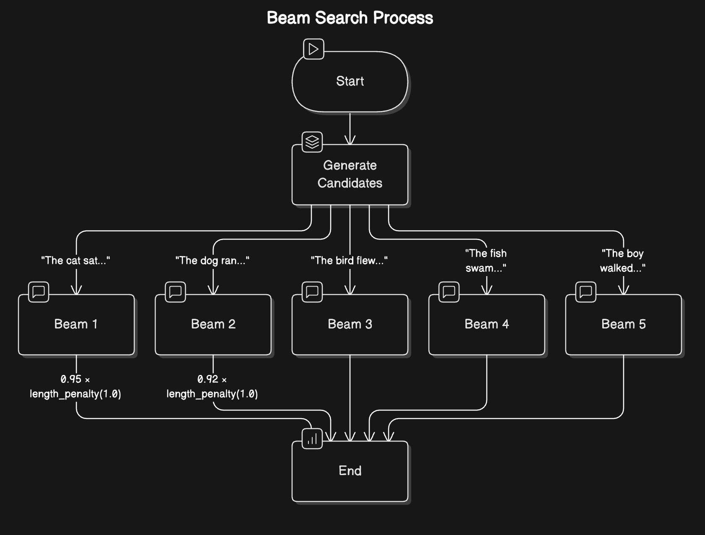
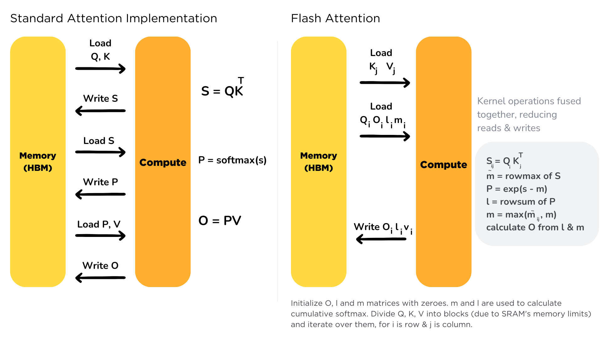

Quantization – int8/bfloat16 inference.
Low-rank adaptation – LoRA for efficient fine-tuning and inference.
Pruning – structured vs unstructured.
Knowledge distillation – student-teacher training.
Batching strategies for inference – microbatching, dynamic batching for latency-sensitive endpoints
Early exit models – stopping inference when confident.
how LLMs actually generate text. The process can be broken down into two main phases: prefill and decode. These phases work together like an assembly line, each playing a crucial role in producing coherent text.
Prefill phase is like the preparation stage in cooking - it’s where all the initial ingredients are processed and made ready.
Tokenization: Converting the input text into tokens (think of these as the basic building blocks the model understands)
Embedding Conversion: Transforming these tokens into numerical representations that capture their meaning
Initial Processing: Running these embeddings through the model’s neural networks to create a rich understanding of the context
This phase is computationally intensive because it needs to process all input tokens at once.
The Decode Phase. The model generates one token at a time in what we call an autoregressive process (where each new token depends on all previous tokens).
Attention Computation: Looking back at all previous tokens to understand context
Probability Calculation: Determining the likelihood of each possible next token
Token Selection: Choosing the next token based on these probabilities
Continuation Check: Deciding whether to continue or stop generation
This phase is memory-intensive because the model needs to keep track of all previously generated tokens and their relationships.
Managing Repetition One common challenge with LLMs is their tendency to repeat themselves - much like a speaker who keeps returning to the same points. To address this, we use two types of penalties:
Presence Penalty: A fixed penalty applied to any token that has appeared before, regardless of how often. This helps prevent the model from reusing the same words.
Frequency Penalty: A scaling penalty that increases based on how often a token has been used. The more a word appears, the less likely it is to be chosen again.
These penalties are applied early in the token selection process, adjusting the raw probabilities before other sampling strategies are applied. Think of them as gentle nudges encouraging the model to explore new vocabulary.
Temperature Control: Like a creativity dial - higher settings (>1.0) make choices more random and creative, lower settings (<1.0) make them more focused and deterministic. This is done by scaling the logits (raw scores) before applying the softmax function to get probabilities: $$ P(x_i) = \frac{e^{(p_i / \tau)}}{\sum_{j} e^{(p_j / \tau)}} $$ Where $p_i$ is the logit for token $i$ and $\tau$ is the temperature. A higher temperature flattens the distribution, making less likely tokens more probable, while a lower temperature sharpens it, favoring the most likely tokens.
Filtering Strategies
OR
Controlling Generation Length
Token Limits: Setting minimum and maximum token counts
Stop Sequences: Defining specific patterns that signal the end of generation
End-of-Sequence Detection: Letting the model naturally conclude its response
For example, if we want to generate a single paragraph, we might set a maximum of 100 tokens and use “\n\n” as a stop sequence.

While the strategies we’ve discussed so far make decisions one token at a time, beam search takes a more holistic approach. Instead of committing to a single choice at each step, it explores multiple possible paths simultaneously - like a chess player thinking several moves ahead.
FlashAttention is an optimized attention mechanism designed to improve the efficiency of transformer models during inference and training. Traditional attention mechanisms can be memory-intensive and slow, especially for long sequences, due to the quadratic complexity of computing attention scores. FlashAttention addresses these challenges by implementing a more memory-efficient algorithm that reduces the amount of data that needs to be stored in memory at any given time.
FlashAttention achieves its efficiency through several key techniques:

FlashAttention2 builds upon the original FlashAttention by further optimizing the attention computation process. It introduces additional improvements such as better handling of variable-length sequences and enhanced support for different hardware architectures.
FlashAttention2 also incorporates more advanced techniques for reducing memory bandwidth usage, which is often a bottleneck in high-performance computing.
Text Generation Inference (TGI) is designed to be stable and predictable in production, using fixed sequence lengths to keep memory usage consistent. TGI manages memory using Flash Attention 2 and continuous batching techniques. This means it can process attention calculations very efficiently and keep the GPU busy by constantly feeding it work. The system can move parts of the model between CPU and GPU when needed, which helps handle larger models.
llama.cpp is a highly optimized C/C++ implementation originally designed for running LLaMA models on consumer hardware. It focuses on CPU efficiency with optional GPU acceleration and is ideal for resource-constrained environments. llama.cpp uses quantization techniques to reduce model size and memory requirements while maintaining good performance. It implements optimized kernels for various CPU architectures and supports basic KV cache management for efficient token generation.
Quantization in llama.cpp reduces the precision of model weights from 32-bit or 16-bit floating point to lower precision formats like 8-bit integers (INT8), 4-bit, or even lower. This significantly reduces memory usage and improves inference speed with minimal quality loss.
Key quantization features in llama.cpp include:
GGML/GGUF Format: Uses custom tensor formats optimized for quantized inference
Mixed Precision: Can apply different quantization levels to different parts of the model
Hardware-Specific Optimizations: Includes optimized code paths for various CPU architectures (AVX2, AVX-512, NEON)
This approach enables running billion-parameter models on consumer hardware with limited memory, making it perfect for local deployments and edge devices.
vLLM takes a different approach by using PagedAttention. Just like how a computer manages its memory in pages, vLLM splits the model’s memory into smaller blocks. This clever system means it can handle different-sized requests more flexibly and doesn’t waste memory space. It’s particularly good at sharing memory between different requests and reduces memory fragmentation, which makes the whole system more efficient.
PagedAttention is a technique that addresses another critical bottleneck in LLM inference: KV cache memory management. During text generation, the model stores attention keys and values (KV cache) for each generated token to reduce redundant computations. The KV cache can become enormous, especially with long sequences or multiple concurrent requests.
vLLM’s key innovation lies in how it manages this cache:
The PagedAttention approach can lead to up to 24x higher throughput compared to traditional methods, making it a game-changer for production LLM deployments.
Open Neural Network Exchange (ONNX) and TorchScript are two popular formats for exporting machine learning models to enable framework-agnostic inference.
When evaluating the efficiency of LLM inference, consider the following metrics:
https://huggingface.co/learn/llm-course/chapter1/8
https://magazine.sebastianraschka.com/p/coding-the-kv-cache-in-llms
https://docs.vllm.ai/en/latest/contributing/
https://huggingface.co/learn/llm-course/chapter2/8